Ohjeet verkossa ja Abitissa
Instruktionerna på nätet och i Abitti
Instructions online and in Abitti
- Nämä ainekohtaiset ja yleiset ohjeet löytyvät verkosta osoitteesta cheat.abitti.fi.
- Dessa ämnesspecifika och allmänna instruktioner finns på nätet på adressen cheat.abitti.fi.
- These subject-specific and general instructions can be found online at cheat.abitti.fi.
-
Koeympäristössä ohjeet löytyvät Valikko > Koeympäristön ohjeet
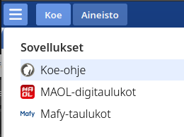
Koeympäristön ohjeet" />
-
I provmiljön hittas instruktionerna genom Meny > Instruktioner
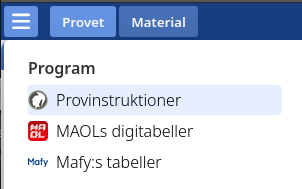
Instruktioner" />
-
In the test environment, the instructions can be found under Menu > Test environment instructions.
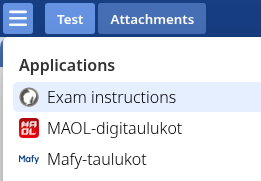
Test environment instructions" />
Yhteyden avaaminen koepalvelimelle
Öppna anslutningen till provservern
Connecting to the exam room server
-
Käynnistä Abitti-kokelassovellus tietokoneellasi.
Starta Abitti-examinandapplikationen på din dator.
Start the Abitti candidate application on your computer.
-
Syötä kokelassovellukseen koepalvelimen osoite. Saat osoitteen kokeen valvojalta.
Mata in provserverns adress i examinandapplikationen. Du får adressen av
provövervakaren.
Enter the address of the exam room server in the candidate application. You will receive the
address from the invigilator.
Jos kokelassovellus ei saa yhteyttä koepalvelimeen, tarkista palvelimen osoite ja että olet oikeassa verkossa.
Om examinandapplikationen inte får kontakt med provservern, kontrollera serverns adress och att du är uppkopplad
till rätt
nätverk.
If the candidate application cannot connect to the exam room server, check the server address and make sure you
are connected to the correct network.
Kokeeseen kirjautuminen
Logga in till provet
Logging in to the test
-
Kirjoita etu- ja sukunimesi niille tarkoitettuun kohtaan.
- Tarkista, että kirjoitit nimesi oikein.
- Jos kirjoitit nimesi väärin, pyydä valvoja paikalle.
-
Kirjoita henkilötunnuksesi sille tarkoitettuun kohtaan.
- Tarkista, että kirjoitit henkilötunnuksen oikein.
- Jos kirjoitit henkilötunnuksen väärin, pyydä valvoja paikalle.
-
Järjestelmä saattaa ehdottaa sinulle suoritettavaa koetta. Tarkista, että ehdotus on oikein. Mikäli et saa
ehdotusta, valitse kokeen kieli (lukiosi opetuskieli) ja koe.
- Lue ja hyväksy koejärjestelmän käyttöehdot.
-
Odota, että valvoja tulee vahvistamaan kirjautumisesi. Odottaessa voit tarkistaa, että näytöllä näkyvät
tiedot
ovat varmasti oikein.
-
Skriv ditt för- och efternamn i det fält som är avsett för detta.
- Kontrollera att du skrev ditt namn rätt.
- Be övervakaren komma om du skrev ditt namn fel.
-
Skriv in din personbeteckning i det fält som är avsett för detta.
- Kontrollera att du skrev din personbeteckning rätt.
- Be övervakaren komma om du skrev personbeteckningen fel.
-
Provsystemet kan föreslå ett prov för dig. Kontrollera att det föreslagna provet är rätt. Om du inte får ett
förslag, välj då språk på provet (gymnasiets undervisningsspråk) och prov.
- Läs och godkänn provsystemets användarvillkor.
-
Vänta tills övervakaren bekräftar din inloggning. Medan du väntar kan du kontrollera att uppgifterna på
skärmen
är korrekta.
-
Write your first and last name in the appropriate fields.
- Check that you entered your name correctly.
- If you entered your name incorrectly, ask an invigilator for assistance.
-
Write your personal identity code in the designated field.
- Check that you entered your personal identity code correctly.
- If you entered your personal identity code incorrectly, ask an invigilator for assistance.
-
The system may suggest an examination for you to take. Check that the suggestion is correct. If no
suggestion is provided, select the examination language (the language of instruction at your upper secondary
school) and the examination.
- Read and accept the terms of use of the examination system.
-
Wait for an invigilator to come and confirm your login. While waiting, you can verify that the information
displayed on the screen is correct.
Näin vastaat kokeessa
Så här svarar du på provet
How to answer the test
-
Merkitse vastauksesi sille varattuun tilaan. Koejärjestelmä tallentaa vastauskentässä olevat vastauksesi
automaattisesti. Vastauskentän alapuolella näkyy käyttämiesi merkkien määrä. Välilyöntejä ja rivinvaihtoja
ei
lasketa mukaan merkkimäärään. Jos vastauskentän merkkimäärä on rajoitettu ja määrä ylittyy, antaa
järjestelmä
virheilmoituksen.
-
Vastauksesi tallennetaan automaattisesti. Jos saat ilmoituksen vastauksen tallennuksen epäonnistumisesta,
pyydä valvoja paikalle.
-
Voit tehdä muistiinpanoja ja luonnostella vastaustasi järjestelmän ohjelmilla tai paperille kokeen aikana.
Tallenna ohjelmilla tekemäsi tiedostot säännöllisesti, jotta ne varmuuskopioidaan palvelimelle. Vastaus
täytyy
kuitenkin liittää vastauskenttään, jotta se arvostellaan.
-
Koevastaukseen voi liittää erikoismerkkejä, matemaattisia kaavoja ja kuvakaappauksia. Ohjeet löytyvät alta.
-
Näin palautat aikaisemman version vastauksesta.
- Klikkaa vastausikkunan oikeassa alanurkassa näkyvää Aiemmat vastausluonnokset -linkkiä.
- Voit selailla vastausvaihtoehtoja klikkaamalla vasemmalla näkyvää valikkoa.
- Jos haluat palauttaa esikatselussa näkyvän vastausvaihtoehdon, klikkaa Palauta-nappia.
-
Käynnistä kuullunymmärtämistehtävän tallenne klikkaamalla play-painiketta (▶).
-
Jos tallenteen ääni ei kuulu, pyydä valvoja paikalle. Jos äänitteen kuuntelukertoja on rajoitettu,
soittimen
oikealta puolelta näet, montako kuuntelukertaa sinulla on jäljellä.
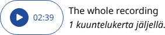
-
Jos tallenteen kuuntelukertoja ei ole rajoitettu, voit kelata sitä vapaasti eteen- tai taaksepäin
niin monta
kertaa kuin haluat. Kuuntelukerroiltaan rajoittamattoman tallenteen soittonopeutta pystyy säätämään
hiiren
oikealla näppäimellä avautuvasta valikosta.
-
Jos kuuntelukerroiltaan rajoitettu äänite ei kuulu, keskeytä kokeen suorittaminen heti ja kutsu valvoja.
Selvitettyään ongelman valvoja voi vapauttaa viimeksi kuunnellun äänitteen sinulle uudelleen kuunneltavaksi.
Vanhempaa kuin edellistä äänitettä ei palauteta. Ongelman selvittämisen aikana tehtävää ei saa jatkaa.
-
Markera svaret i fältet som reserverats för det. Provsystemet sparar automatiskt dina svar i svarsfältet.
Nedanför svarsfältet ser du antalet tecken du har använt. Mellanslag och radbyten räknas inte in i
teckenantalet. Ifall svarsfältets teckenantal är begränsat får du ett felmeddelande.
-
Ditt svar sparas automatiskt. Om du får ett meddelande om att svaret inte kan sparas ska du kalla på en
övervakare.
-
Du kan göra anteckningar och göra utkast på ditt svar med systemets program eller på papper under provet.
Spara
de filer du skapat med programmet regelbundet så att de säkerhetskopieras till servern. Svaret måste dock
fogas
till svarsfältet för att det ska kunna bedömas.
-
Det går att bifoga specialtecken, matematiska formler och skärmdumpar till provsvaren. Anvisningar finns
nedan.
-
Så här återställer du en tidigare version av svaret.
- Klicka på länken Tidigare svarsutkast nere till höger i svarsfönstret.
- Du kan bläddra bland svarsalternativen genom att klicka på menyn till vänster.
- Om du vill återställa svarsalternativet som visas i förhandsgranskningen klickar du på Återställ.
-
Spela upp inspelningen i hörförståelseuppgiften genom att klicka på play (�B6;).
-
Be övervakaren komma om du inte hör ljudet av inspelningen. Om inspelningens lyssningsgånger är
begränsade
ser du hur många gånger du har kvar att lyssna till höger i spelaren.
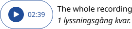
-
Om inspelningens lyssningsgånger inte är begränsade kan du fritt spola den framåt eller bakåt så
många
gånger du vill. Uppspelningshastigheten för en inspelning med obegränsade lyssningsgånger kan
justeras i
menyn som öppnas med höger musknapp.
-
Avbryt genast avläggandet av provet och be övervakaren komma om du inte hör en inspelning med begränsade
lyssningsgånger. Efter att ha utrett problemet kan övervakaren återställa den senast avlyssnade inspelningen
så
att du kan lyssna på den igen. Äldre inspelningar än den föregående återställs inte. Du får inte fortsätta
med
uppgiften medan problemet utreds.
-
Mark your answer in the space provided. The examination system automatically saves the answers entered in
the answer field.
The number of characters you have used is displayed below the answer field. Spaces and line breaks are not
included in the character count. If the answer field has a character limit and the limit is exceeded, the
system
will display an error message.
-
Your answer is saved automatically. If you receive a notification that saving your answer has failed,
ask an invigilator for assistance.
-
You may take notes and draft your answer using the system's applications or on paper during the examination.
Save files created with the applications regularly so that they are backed up to the server. However, your
answer
must be inserted into the answer field in order to be assessed.
-
Special characters, mathematical formulae and screenshots can be attached to an examination answer.
Instructions are provided below.
-
To restore an earlier version of your answer:
- Click the Previous answer drafts link in the lower right corner of the answer window.
- You can browse answer versions by clicking the menu displayed on the left.
- If you want to restore the answer version shown in the preview, click the Restore button.
-
Start the recording for the listening comprehension task by clicking the play button (▶).
-
If you cannot hear the recording, ask an invigilator for assistance. If the number of times the
recording may be played is limited,
you can see the number of remaining playbacks on the right-hand side of the player.
N.B.! The text accompanying the number of remaining playbacks in Finnish. This will change in the future.
-
If the number of playbacks is not limited, you may freely fast-forward or rewind the recording as
many times
as you wish. For recordings with unlimited playbacks, the playback speed can be adjusted from the
menu opened
by right-clicking with the mouse.
-
If a recording with a limited number of playbacks cannot be heard, stop the examination immediately and call
an invigilator.
Once the problem has been resolved, the invigilator may release the most recently played recording for you
to listen to again.
Recordings played earlier than the most recent one will not be restored. The task must not be continued
while the
problem is being investigated.
Kuvakaappausten lisääminen
Lägga till skärmdumpar
Adding screenshots
Voit lisätä kuvakaappauksia tekstivastauskenttään.
Du kan lägga till skärmdumpar i fältet för textsvar.
Screenshots can be added to text answer fields.
- Ota esiin se näkymä (esim. graafi tai piirros), jonka haluat liittää vastaukseen.
-
Klikkaa näytön oikean ylänurkan kamerakuvaketta:
-
Jos kuvaketta ei ole näkyvissä, käytä oman käyttöjärjestelmäsi kuvakappaukseen tarkoitettua
näppäinyhdistelmää.
- Jos et voi ottaa kuvakaappausta, ota yhteyttä valvojaan.
- Paina hiiren painike alas ja rajaa kuvakaappaukseen haluamasi osa näyttöä.
- Ota vastaus esille ja siirrä osoitin haluamaasi paikkaan tekstiä.
- Paina Ctrl ja V, jolloin kuvakaappaus liittyy vastaukseen.
- Ta fram den vy (t.ex. en graf eller teckning) som du vill lägga till i svaret.
-
Klicka på kameraikonen uppe till höger på skärmen:
- Om ikonen inte visas, använd tangentbordskombinationen för att ta en skärmdump i ditt egen
operativsystem.
- Om du inte kan ta en skärmdump, kontakta övervakaren.
- Tryck ner musknappen och avgränsa skärmdumpen till önskad del av skärmen.
- Ta fram svaret och flytta pekaren till önskad plats i texten.
- Tryck på Ctrl och V för att lägga till skärmdumpen i svaret.
- Bring up the view (for example, a graph or drawing) that you want to attach to your answer.
-
Click the camera icon in the upper right corner of the screen:
-
If the icon is not visible, use the screenshot keyboard shortcut provided by your operating system.
- If you are unable to take a screenshot, contact an invigilator.
- Press and hold the mouse button, then select the area of the screen that you want to capture in the
screenshot.
- Open your answer and place the cursor where you want the image to appear in the text.
- Press Ctrl and V to paste the screenshot into your answer.
Matemaattisten kaavojen lisääminen
Lägga till matematiska formler
Adding mathematical formulae
Tekstivastauskenttiin voi lisätä matemaattisia kaavoja.
Du kan lägga till matematiska formler i fältet för textsvar.
Mathematical formulae can be added to text answer fields.
- Aktivoi vastausikkuna klikkaamalla sitä.
-
Yksittäisiä matemaattisia merkkejä voi lisätä koesivun ylälaidassa olevasta valikosta:
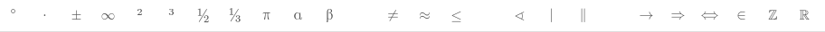
-
Lisää yksittäisiä matemaattisia merkkejä löydät nuolikuvakkeen takaa:
-
Varsinaisen kaavaeditorin voit avata klikkaamalla koesivun vasemmassa ylänurkassa olevaa Lisää kaava
-painiketta.
-
Kaavaa voit kirjoittaa kahdella eri tavalla.
-
Editorin vasemmalle puolelle voit lisätä kaavahahmoja koesivun yläosasta ja täyttää harmaisiin
laatikoihin
merkintöjä.
- Editorin oikealla puolella voit muokata kaavaa LaTeX-kuvauskielellä.
-
Kaavaeditori pyrkii päivittämään molempia esitysmuotoja, jos toista muokataan. Jos
LaTeX-esitysmuotoa ei
voida näyttää vasemmalla esimerkiksi virheellisen syntaksin mukaan, on vasen puoli valkoinen.
- Uuden kaavarivin saa painamalla rivinvaihtonäppäintä.
- Kaava "suljetaan" klikkaamalla hiirellä editorin ulkopuolella.
-
Arvostelussa näkyy suljettu sinipohjainen kaava. Jos kaavan tilalla on punainen varoituskolmio, on kaavassa
virhe.
- Aktivera svarsfönstret genom att klicka på det.
-
Enskilda matematiska tecken kan läggas till från menyn uppe på provsidan:
-
Du hittar fler enskilda matematiska tecken bakom pilikonen:
-
Du kan öppna den egentliga formeleditorn genom att klicka på Lägg till formel uppe till vänster på
provsidan.
-
Du kan skriva formeln på två olika sätt.
-
Till vänster i editorn kan du lägga till formelmodeller från övre delen av sidan och fylla i
markeringar i
de grå lådorna.
- Till höger i editorn kan du redigera formeln med beskrivningsspråket LaTeX.
-
Formeleditorn strävar efter att uppdatera båda formerna om den ena redigeras. Om LaTeX-formen inte
visas
till vänster till exempel på grund av en felaktig syntax, är den vänstra sidan vit.
- Tryck på radbytesknappen för att få en ny formelrad.
- Formeln ”stängs” om du klickar med musen utanför editorn.
-
I bedömningen visas en sluten blåbottnad formel. Om en röd varningstriangel visas istället för formeln finns
det
ett fel i formeln.
- Activate the answer window by clicking on it.
-
Individual mathematical symbols can be inserted from the menu at the top of the examination page:
-
Additional mathematical symbols can be found under the arrow icon:
-
The actual formula editor can be opened by clicking the Insert formula
button in the upper left corner of the examination page.
-
You can enter a formula in two different ways.
-
On the left side of the editor, you can insert formula templates from the top of the examination
page and fill in the grey boxes
with symbols and expressions.
- On the right side of the editor, you can edit the formula using the LaTeX markup language.
-
The formula editor attempts to keep both representations updated when one of them is edited. If the
LaTeX representation
cannot be displayed on the left, for example because of invalid syntax, the left side will appear
blank.
- A new formula line can be created by pressing the Enter key.
- The formula is “closed” by clicking outside the editor.
-
In assessment, a closed formula with a blue background is displayed. If a red warning triangle appears
instead of the formula,
there is an error in the formula.
Ennen kuin aloitat kokeen
Innan du börjar provet
Before you start the test
Tunnistautumisen jälkeen voit säätää työskentely-ympäristön sopivaksi:
Efter identifiering kan du justera arbetsmiljön så att den passar dig:
After authentication, you can adjust the working environment to suit your needs:
-
Valitse äänilaite ja säädä äänenvoimakkuudet sopivaksi. Löydät säädöt kokeen aikana klikkaamalla työpöydän
oikean ylänurkan hammasratakuvaketta.
-
Työpöydän ja oheisohjelmien kielivalinnan löydät klikkaamalla työpöydän oikean ylänurkan
hammasratakuvaketta.
Avoinna olevien oheisohjelmien kieli vaihtuu, kun suljet ja avaat ohjelman uudelleen.
-
Välj ljudenhet och justera volymerna så att de passar dig. Under provet hittar du inställningarna genom att
klicka på kugghjulsikonen uppe till höger på skrivbordet.
-
Du hittar språkvalet för skrivbordet och programmen i provsystemet genom att klicka på kugghjulsikonen uppe
till höger på
skrivbordet. Språket för öppna program ändras när du stänger och öppnar programmet igen.
-
Select the audio device and adjust the volume levels as needed. You can access the settings during the
examination by clicking the gear icon in the upper right corner of the desktop.
-
You can find the language settings for the desktop and supplementary applications by clicking the gear icon
in the upper right corner of the desktop.
The language of open supplementary applications will change when you close and reopen the application.
Työskentely-ympäristö
Arbetsmiljö
Working environment
-
Koetehtävät ja –vastaukset sekä koeaineistot sisältävät ikkunat näkyvät kaiken aikaa työpöydällä. Jos
kokeessa
ei ole aineistoa, aineistoikkunaa ei näytetä.
-
Taustamateriaalit, oheisohjelmat ja omat tiedostosi löytyvät työpöydän vasemman ylänurkan sovellusvalikosta.
- Käynnistä ohjelma klikkaamalla haluamasi ohjelman kuvaketta.
-
Avaa tiedosto klikkaamalla sen kuvaketta tai tiedostonimeä.
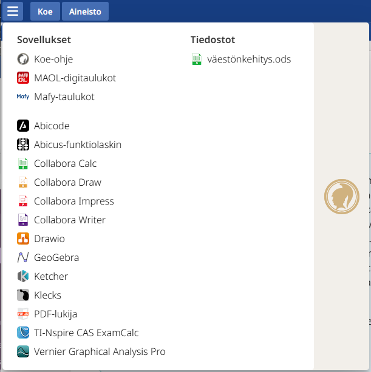
- Sinulla voi olla samaan aikaan käynnissä useita ohjelmia.
- Näet käynnissä olevat ohjelmat näytön yläreunan sovelluspalkista.
-
Voit vaihtaa käytössä olevaa ikkunaa klikkaamalla ohjelman yläreunan sovelluspalkissa olevaa kuvaketta.
- Voit sulkea sovelluksen klikkaamalla sen ikkunan ylänurkan X-kuvaketta.
-
Ylänurkasta löytyy toiminnot ikkunan piilottamiseksi, siirtämiseksi näytön vasempaan ja oikeaan
puolikkaaseen
sekä koko työpöydän kokoiseksi.
-
Voit siirtää ikkunaa ottamalla kiinni sen yläpalkista ja säätää kokoa tarttumalla hiirellä ikkunan
reunoihin.
- Eri kielten vaatimia kirjaimia ja muita erikoismerkkejä voit tuottaa kahdella eri tavalla:
-
Vaihtamalla näppäimistöasettelu asetusvalikosta, johon pääset klikkaamalla oikean ylänurkan
hammasrataskuvaketta.
Näppäimistöasettelujen valikoima riippuu tietokoneesi käyttöjärjestelmästä.
-
Avaamalla koeympäristön ohjeet (näytön vasemman ylänurkan kuvake > Koeympäristön ohjeet > Näppäimistö)
ja
klikkaamalla haluamaasi erikoismerkkiä. Liitä merkki haluamaasi paikkaan leikepöydältä painamalla Ctrl
ja V.
-
Jos poistut paikaltasi kokeen aikana esimerkiksi vessaan, kytke näytönsäästäjä päälle klikkaamalla työpöydän
oikean ylänurkan hammasrataskuvaketta > Lukitse näyttö.
- Jos sovellus jää jumiin, koita päivittää sivu painamalla Ctrl + R
- Voit lähentää tai loitontaa näkymää painamalla Ctrl + plusmerkki (+) tai Ctrl + miinusmerkki (-)
-
Fönstren som innehåller provuppgifter och -svar samt provmaterial syns hela tiden på skrivbordet. Om det
inte
finns material i provet visas inget materialfönster.
-
Bakgrundsmaterial, program och dina egna filer finns i programmenyn uppe till vänster på skrivbordet.
- Starta programmet genom att klicka på ikonen för önskat program.
-
Öppna filen genom att klicka på dess ikon eller filnamn.
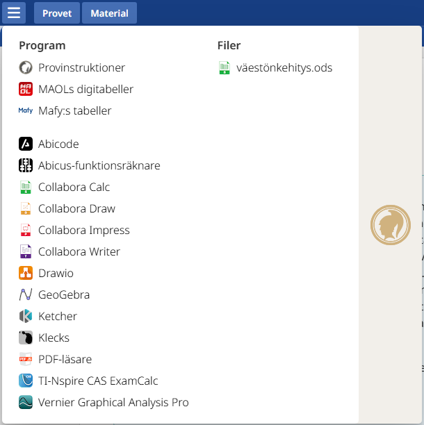
- Du kan köra flera program samtidigt.
- Du ser vilka program som körs i programbalken upptill på skärmen.
-
Du kan växla fönster genom att klicka på ikonen i programbalken upptill på skärmen.
- Du kan stänga programmet genom att klicka på X-ikonen uppe i hörnet av fönstret.
-
I det övre hörnet hittar du funktioner för att dölja fönstret, flytta det till vänster och höger halva av
skärmen samt göra det lika stort som hela skrivbordet.
-
Du kan flytta fönstret genom att ta tag i dess övre balk och justera storleken på det genom att ta tag i
fönstrets
kanter med musen.
- Du kan skapa bokstäver och andra specialtecken på olika språk på två olika sätt:
-
Genom att ändra tangentbordslayouten från inställningsmenyn, som kan nås genom att klicka på
kugghjulsikonen i det övre högra hörnet.
Urvalet av tangentbordskartor beror på din dators operativsystem.
-
Öppna anvisningarna för provmiljön (ikonen uppe till vänster på skärmen > Anvisningar för provmiljön >
Tangentbord) och klicka på önskat specialtecken. Lägg tecknet på önskad plats från klippbordet genom att
trycka på Ctrl och V.
-
Om du lämnar din plats för att till exempel besöka toaletten under provet ska du starta skärmsläckaren genom
att
klicka på kugghjulsikonen uppe till höger på skrivbordet > Lås skärmen.
- Om programmet hänger sig, försök uppdatera sidan genom att trycka på Ctrl + R.
- Du kan zooma in eller ut genom att trycka på Ctrl + plus (+) eller Ctrl + minus (-).
-
The examination questions and answers, as well as any examination materials, are displayed in windows that
remain visible on the desktop at all times. If the examination does not contain any materials, the materials
window will not be shown.
-
Background materials, supplementary applications and your own files can be found in the application menu in
the upper left corner of the desktop.
- Start an application by clicking its icon.
-
Open a file by clicking its icon or filename.
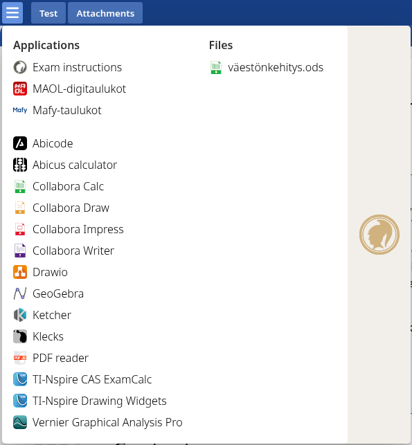
- You may have several applications running at the same time.
- You can see running applications in the application bar at the top of the screen.
-
You can switch between open windows by clicking the application's icon in the application bar at the
top.
- You can close an application by clicking the X icon in the corner of its window.
-
Functions for minimising a window, moving it to the left or right half of the screen, and maximising it to
fill the desktop can be found in the corner of the window.
-
You can move a window by dragging its title bar and resize it by dragging its edges with the mouse.
- Letters and other special characters required by different languages can be entered in two ways:
-
By changing the keyboard layout in the settings menu, which you can access by clicking the gear icon in
the upper right corner.
The available keyboard layouts depend on your computer's operating system.
-
By opening the Examination Environment Instructions (icon in the upper left corner of the screen >
Examination Environment Instructions > Keyboard)
and clicking the special character you want. Paste the character from the clipboard into the desired
location by pressing Ctrl and V.
-
If you leave your workstation during the examination, for example to visit the toilet, activate the screen
lock by clicking the gear icon
in the upper right corner of the desktop > Lock screen.
- If an application becomes unresponsive, try refreshing the page by pressing Ctrl + R
- You can zoom in or out by pressing Ctrl + plus sign (+) or Ctrl + minus sign (-)
Vinkkejä oheisohjelmiin
Tips för tilläggsprogram
Tips for auxiliary applications
Collabora Calc
Jos haluat tuoda solussa käyttämäsi kaavan näkyviin, voit kirjoittaa toiseen soluun =KAAVA(<solu tähän>) esim. =KAAVA(A1)
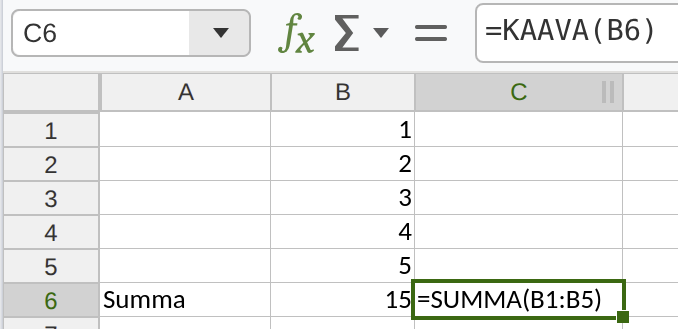
Solussa C6 on
=KAAVA(B6)
Om du vill visa formeln du använder i en cell, kan du skriva i en annan cell =FORMEL(<cell
här>), t.ex. =FORMEL(A1)
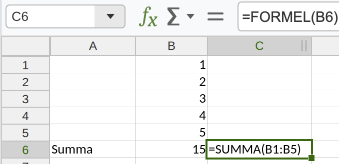
I cell C6 står
=FORMEL(B6)
If you want to display the formula used in a spreadsheet cell, you can enter the following in another cell =FORMULA(<cell reference>), for example =FORMULA(A1)
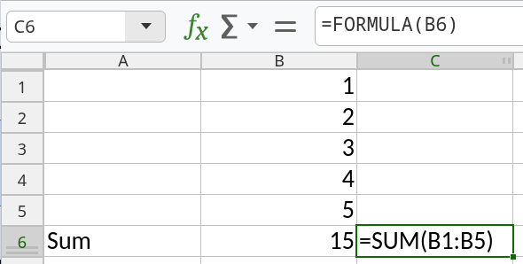
Cell C6 contains
=FORMULA(B6)
Tiedostojen käsittely
Filhantering
File management
Oheisohjelmiin (esim. Collabora, GeoGebra, Klecks) dokumentit on talletettava tiedostoiksi.
I programmen i provsystemet (t.ex. Collabora, GeoGebra, Klecks) ska dokument sparas som filer.
Documents created in auxiliary applications (e.g. Collabora, GeoGebra, Klecks) must be saved as files.
-
Käynnistäessäsi oheisohjelmaa sinun on annettava tiedostolle nimi. Oletusnimessä on oheisohjelman nimi ja
tämänhetkinen kellonaika.
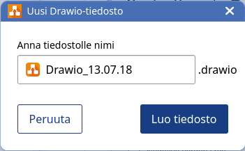
-
Voit muuttaa tiedoston oletusnimeä haluamaksesi.
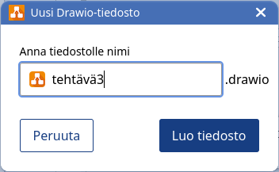
- Oheisohjelma käynnistyy, kun klikkaat "Luo tiedosto".
-
När du startar ett program i provsystemet måste du ge filen ett namn. Standardnamnet innehåller programmets
namn och det aktuella klockslaget.
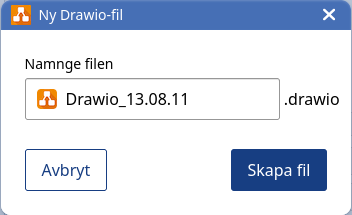
-
Du kan ändra filens standardnamn till vad du vill.
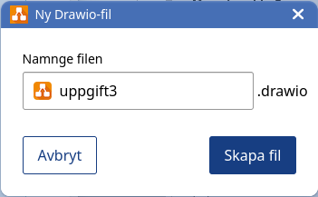
- Programmet startar när du klickar på "Skapa fil".
-
When starting an auxiliary application, you must give the file a name. The default name consists of the name
of the auxiliary application and the current time.
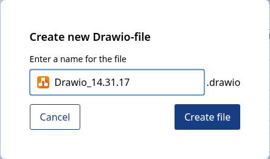
-
You may change the default file name to any name you wish.
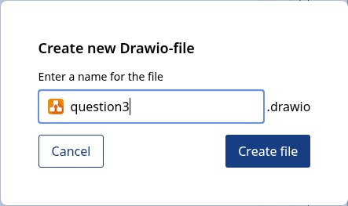
- The auxiliary application starts when you click "Create file".
Tiedostot löytyvät työpöydän vasemman ylänurkan sovellusvalikosta. Voit avata tiedoston klikkaamalla sitä:
Filerna finns i programmenyn uppe till vänster på skrivbordet. Du kan öppna filen genom att klicka på den:
Files can be found in the application menu in the upper-left corner of the desktop. Click the file to open it:
Et voi poistaa tai nimetä tiedostoja uudelleen.
Du kan inte ta bort eller byta namn på filer.
You cannot delete or rename files.
Kokeen päättäminen
Avsluta provet
Finishing the test
Tarkista, että olet vastannut kaikkiin vaadittuihin kysymyksiin.
Kontrollera att du har svarat på alla frågor som krävs.
Check that you have answered all required questions.
Tarkista, että vastauskentät ovat kokonaan tyhjiä niiden kysymysten osalta, joihin et halua vastata.
Kontrollera att svarsfälten är helt tomma för de frågor som du inte vill svara på.
Check that the answer fields are completely empty for any questions you do not wish to answer.
Jos olet palauttamassa liian monta vastausta arvosteltavaksi tai ylittämässä vastaukselle asetetun
merkkimäärärajoituksen, saat asiasta varoituksen. Varoitus näkyy tehtäväsivun navigoinnissa (esimerkki):
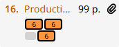
ja sivun alalaidassa punaisella tekstipohjalla. Esimerkki varoituksesta:
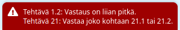
Om du returnerar för många svar för bedömning eller överskrider teckenantalsbegränsningen i svarsfältet får du
en
varning. Varningen visas i uppgiftssidans navigeringsfält (exempel nedan):
och vid sidans nedre kant på rött textbotten. Exempel på varning:
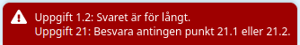
If you are submitting too many answers for assessment or exceeding the character limit set for an answer, you
will receive a warning. The warning is displayed in the task page navigation (example):
and at the bottom of the page on a red background. Example of a warning:
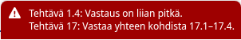
N.B.! The warning is in Finnish. This will change in the future.
Varoitus poistuu, kun tyhjennät ylimääräisen tekstivastauskentän tai lyhennät vastaustasi.
Varningen försvinner då du tömmer det överflödiga svarsfältet eller då du förkortar ditt svar.
The warning will disappear when you clear the extra text answer field or shorten your answer.
Kun olet valmis päättämään kokeen, mene koesivun alalaitaan ja klikkaa "Siirry tarkastelemaan vastauksiasi".
Tällä
sivulla voit vielä kerran varmistaa, että vastauksesi on tallentunut oikein. Päätä koe klikkaamalla
tarkistussivun
alalaidassa olevaa "Päätä koe" -nappia.
När du är redo att avsluta provet, gå till nedre delen av provsidan och klicka på "Gå till att granska dina
svar".
På denna sida kan du ännu en gång försäkra dig om att dina svar har sparats korrekt. Avsluta provet genom att
klicka på
knappen "Avsluta provet" längst ner på granskningssidan.
When you are ready to finish the test, go to the bottom of the test page and click “Proceed to review your
answers”. On this page, you can verify one final time that your answers have been saved correctly. Click the
“Finish test” button at the bottom of the review page to finish the test.
Kun olet päättänyt kokeen, sammuta kokelassovellus klikkaamalla oikean ylänurkan hammasratakuvaketta ja sen
jälkeen "Sulje koejärjestelmä". (på svenska: Stäng provsystemet)
När du har avslutat provet, stäng examinandapplikationen genom att klicka på kugghjulsikonen uppe till höger och
sedan "Stäng provsystemet".
After finishing the test, click the cogwheel icon in the upper-right corner and then select “Close test system”
to shut down the candidate application.
Mitä teet, kun…
Vad gör du om...
What to do when…
Jos tietokone toimii yllättävästi, ota heti yhteyttä valvojaan.
Om datorn fungerar på ett oväntat sätt ska du genast kontakta övervakaren.
If your computer behaves unexpectedly, contact an invigilator immediately.
Viittaa valvoja välittömästi paikalle, jos
Be omedelbart övervakaren komma till din plats om
Immediately raise your hand to call an invigilator if you
- huomaat tekeväsi väärää tai vääränkielistä koetta
- du märker att du gör fel prov eller ett prov på fel språk
- notice that you are taking the wrong test or a test in the wrong language
- et saa ääniä kuulumaan kuulokkeista
- det inte kommer ljud från hörlurarna
- cannot hear audio through your headphones
- et häiriön takia kuullut kuullunymmärtämistehtävän tallennetta
- du inte hörde inspelningen av hörförståelseuppgiften på grund av störning
- missed part of a listening comprehension recording because of a disturbance
- järjestelmä ilmoittaa, että verkkoyhteys katkeaa, eikä verkkoyhteys palaa välittömästi
- systemet meddelar att nätförbindelsen bryts och om nätförbindelsen inte genast återvänder
- receive a notification that the network connection has been lost and the connection does not
return immediately
- koneesi lakkaa toimimasta tai kohtaat muita ongelmia tai häiriöitä
- din dator slutar fungera eller du stöter på andra problem eller störningar
- your computer stops working or you encounter any other problems or disruptions
...sinulla on liikaa välilehtiä
...du har för många flikar
...you have too many tabs open
Pyri siihen, että sinulla ei ole avoinna ylimääräisiä välilehtiä tai käynnistettyjä ohjelmia. Ne tekevät
käytöstä
sekavaa ja voivat johtaa tietokoneen toimintahäiriöihin, jos tietokoneen muisti loppuu.
Sträva efter att inte har extra flikar eller startade program öppna. De gör användningen rörig och kan leda till
störningar i datorns funktion om datorns minne tar slut.
Keep the number of open tabs and running applications to a minimum. Too many open tabs or applications may slow
down the test system and can cause problems if the computer runs out of memory.
- Aktivoi suljettava ohjelma näytön yläpalkista
- Aktivera programmet du vill stänga från det övre balken på skärmen
- Activate the application you want to close from the bar at the top of the screen.
- Jos suljet oheisohjelman ikkunan, varmista, että olet tallettanut tiedoston.
- Om du stänger programfönstret, se till att du har sparat filen.
- If you close the window of an auxiliary application, make sure that you have saved the file.
- Sulje ikkuna sen oikeassa ylänurkassa olevasta X-napista.
- Stäng fönstret genom att klicka på X-knappen i det övre högra hörnet.
- Close the window using the X button in the upper-right corner.
- Et voi sulkea koe- tai aineistovälilehtiä.
- Du inte kan stänga flikarna för prov eller material.
- You cannot close test tabs or material tabs.
...kaavaeditorin esikatselu ilmoittaa virheestä
...förhandsgranskningen av formeleditorn meddelar om fel
...the formula editor preview displays an error message
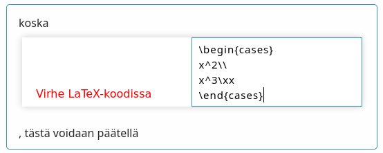
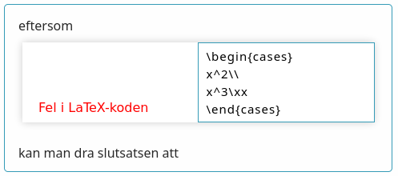
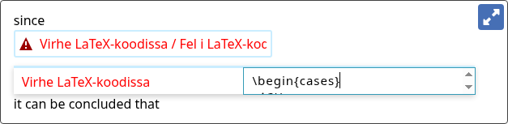
Jos muokattava kaava ei näy editorin vasemmalla puolella, muokattava esikatselu ei osaa näyttää editorin
oikealla
puolella olevaa LaTeX-koodia. Kokeile jotain näistä:
Om formeln som ska redigeras inte syns till vänster i editorn, kan inte den redigerbara förhandsgranskningen
visa
LaTeX-koden som är till höger i editorn. Prova något av följande:
If the formula you are editing is not visible on the left side of the editor, the live preview cannot display
the LaTeX code shown on the right side of the editor. Try one of the following:
-
Sulje kaavaeditori klikkaamalla vastauskentän ulkopuolelle. Jos kaava näkyy nyt oikein, kaikki on kunnossa.
Arvostelu perustuu tähän kaavaan.
-
Stäng formeleditorn. Om formeln på blå botten är rätt, är allt i sin ordning. Bedömningen grundar sig på
formeln
på blå botten.
-
Click outside the answer field to close the formula editor. If the formula is now displayed correctly,
everything is fine. Assessment will be based on this formula.
- Voit yrittää palauttaa aiempaa toimivaa kaava Aiemmat vastausluonnokset -toiminnolla.
- Du kan försöka återställa en tidigare fungerande formel med funktionen Tidigare svarsutkast.
- You can try to revert to an earlier version of the formula using the Previous answer drafts
feature.
- Voit jatkaa kaavan muokkausta LaTeX-koodia ja katsomalla kaavaa sulkemalla sen.
- Du kan fortsätta att redigera formeln i LaTeX-koden och titta på formeln genom att stänga den.
- You can continue editing the formula in LaTeX code and preview the formula by closing the code
view.
-
Ellei mikään edellä mainituista ohjeista ratkaise ongelmaa, voit joutua aloittamaan kaavan kirjoittamisen
uudelleen.
-
Om ingen av de ovan nämnda anvisningarna löser problemet kan du bli tvungen att skriva formeln på nytt.
-
If none of the above instructions resolves the problem, you may need to start writing the formula again from
the beginning.
- Voitko kirjoittaa kaavan jollain muulla työkalulla, esimerkiksi sovelluksella?
- Kan du skriva formeln med något annat verktyg, till exempel en applikation?
- Can you write the formula using another tool, such as an application?
...kaavaeditorilla laaditun kaavan paikalla on virheilmoitus
...ett varningsmeddelande visas i stället för formeln som skapats med formeleditorn
...an error message appears instead of a formula created with the formula editor
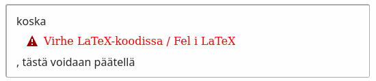
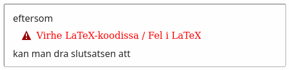
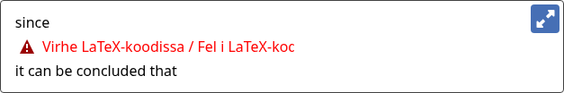
Jos suljetun sinipohjaisen kaavan paikalla on virheilmoitus, ei koejärjestelmä ymmärrä kaavan LaTeX-koodia eikä
kaava siksi näy arvostelussa. Kokeile jotakin näistä:
Om det finns ett varningsmeddelande i stället för en sluten formel med blått botten förstår provsystemet inte
formelns LaTeX-kod och formeln syns därför inte i bedömningen. Prova något av följande:
If an error message appears in place of a closed formula shown on a blue background, the test system cannot
interpret the formula’s LaTeX code and therefore the formula will not be visible during assessment. Try one of
the following:
- Voit yrittää palauttaa aiempaa toimivaa kaavaversiota Aiemmat vastausluonnokset -toiminnolla.
-
Du kan försöka återställa en tidigare fungerande formelversion med funktionen Tidigare svarsutkast.
- You can try to revert to an earlier version of the formula using the Previous answer drafts
feature.
- Avaa kaava ja muokkaa sitä, kunnes virheilmoitus poistuu.
- Öppna formeln och redigera den tills varningsmeddelandet försvinner.
- Open the formula and edit it until the error message disappears.
-
Ellei kumpikaan edellä mainituista ohjeista ratkaise ongelmaa, voit joutua aloittamaan kaavan kirjoittamisen
uudelleen.
-
Om ingen av de ovan nämnda anvisningarna löser problemet kan du bli tvungen att skriva formeln på nytt.
-
If neither of the above instructions resolves the problem, you may need to start writing the formula again
from the beginning.
- Voitko kirjoittaa kaavan jollain muulla työkalulla, esimerkiksi sovelluksella?
- Kan du skriva formeln med något annat verktyg, till exempel en applikation?
- Can you write the formula using another tool, such as an application?